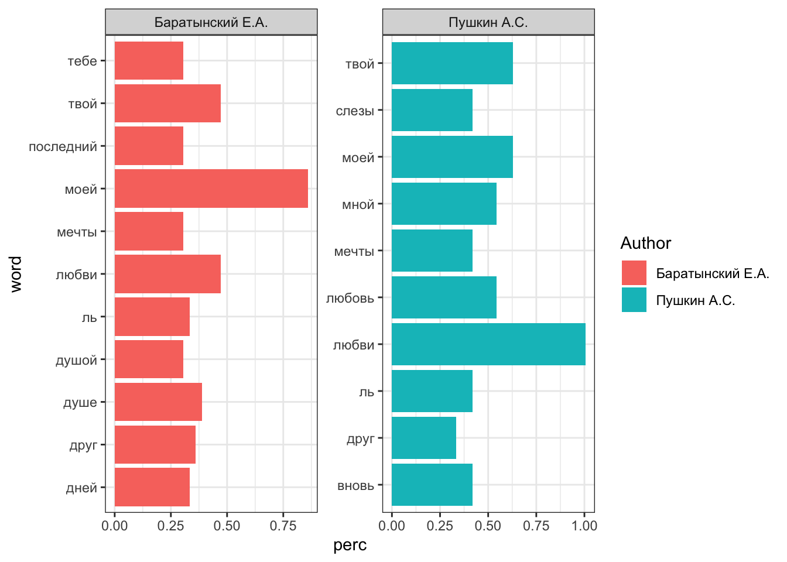

library(tidyverse)2 Табличные данные. Визуализации
В этом уроке мы научимся работать с “прямоугольными”, т.е. табличными, данными на примере корпуса русской элегии 1815—1835 гг., собранного и опубликованного Антониной Мартыненко в 2020 г.
Существуют два основных “диалекта” R, один из которых опирается главным образом на функции и структуры данных базового R, а другой пользуется синтаксисом tidyverse. Tidyverse – это семейство пакетов (метапакет), разработанных Хадли Уикхемом и др., которое включает в себя в том числе пакеты dplyr, ggplot2 и многие другие.
2.1 Импорт табличных данных
Файл можно скачать вручную по ссылке выше или воспользоваться специальной функцией.
url <- "https://dataverse.pushdom.ru/api/access/datafile/:persistentId?persistentId=doi:10.31860/openlit-2019.11-C001/6EPZFO"В окружении появится объект url. Это строка, т.е. последовательность символов. Передаем ее в качестве аргумента функции download.file(); вторым аргументом указываем название файла-назначения:
download.file(url, destfile = "elegies.tab")После этого можно прочитать файл в окружение:
elegies_tbl <- read_tsv("elegies.tab")2.2 Анализ и обобщение данных
2.2.1 Tibble
Основная структура данных в tidyverse – это tibble, современный вариант датафрейма. Тиббл, как говорят его разработчики, это ленивые и недовольные датафреймы: они делают меньше и жалуются больше. Это позволяет решать проблемы на более ранних этапах, что, как правило, приводит к созданию более чистого и выразительного кода.
Основные отличия от обычного датафрейма:
- усовершенствованный метод
print(), не нужно постоянно вызыватьhead(); - нет имен рядов;
- допускает синтаксически “неправильные” имена столбцов;
- при индексировании не превращается в вектор.
Преобразуем наш тиббл в датафрейм для сравнения.
elegies_df <- as.data.frame(elegies_tbl)2.2.2 Dplyr
“Грамматика манипуляции данных”, лежащая в основе dplyr, предоставляет последовательный набор глаголов, которые помогают решать наиболее распространенные задачи манипулирования данными:
mutate()добавляет новые переменные, которые являются функциями существующих переменных;select()выбирает переменные (столбцы) на основе их имен;filter()выбирает наблюдения (ряды) на основе их значений;summarise()обобщает значения;arrange()изменяет порядок следования строк.
Все эти глаголы естественным образом сочетаются с функцией group_by(), которая позволяет выполнять любые операции “по группам”, и с оператором pipe |> из пакета magrittr.
В итоге получается лаконичный и читаемый код. Узнаем, за какие года у нас есть элегии.
elegies_tbl |>
count(Year) Отберем элегии 1824 г. и выясним, какие авторы их писали.
elegies_tbl |>
filter(Year == 1824) |> # используем логический оператор для выбора
count(Author) |> # можно задать аргумент sort = TRUE
arrange(-n) # не нужно, если sort = TRUE2.3 Импорт текстовых данных
Скачаем архив элегий и распакуем его.
url = "https://dataverse.pushdom.ru/api/access/datafile/:persistentId?persistentId=doi:10.31860/openlit-2019.11-C001/SKGO9Q"
download.file(url, "corpus.zip")
# trying URL 'https://dataverse.pushdom.ru/api/access/datafile/:persistentId?persistentId=doi:10.31860/openlit-2019.11-C001/SKGO9Q'
# Content type 'application/zip; name="elegies_corpus.zip";charset=UTF-8' length 806772 bytes (787 KB)
# ==================================================
# downloaded 787 KBПосле выполнения команды ниже в рабочей директории должна появиться папка corpus.
unzip("corpus.zip")Заглянем в папку и сохраним список файлов.
elegies_files <- list.files("corpus", full.names = TRUE)Чтобы распечатать пути к первым шести файлам, используйте команду head().
head(elegies_files)[1] "corpus/1_DGlebov_1818.txt" "corpus/10_Baratynsky_1820.txt"
[3] "corpus/100_Pushkin_1825.txt" "corpus/101_Jazykov_1825.txt"
[5] "corpus/102_Jazykov_1825.txt" "corpus/103_Jazykov_1825.txt" Создадим таблицу со всеми текстами и их id. Функция str_c() из пакета stringr позволяет объединить несколько строк в одну (через пробел).
elegies_texts <- tibble(title = elegies_files,
text = map_chr(elegies_files,
\(x) str_c(read_lines(x), collapse = " ")
)
)
elegies_textsТеперь преобразуем столбец title: оставим только id.
elegies_sep <- elegies_texts |>
mutate(title = str_remove(title, "corpus/")) |>
separate(title, into = c("id", NA)) |> # отбрасываем все после id
mutate(id = as.numeric(id))
elegies_sep2.4 Объединение данных
Теперь мы можем объединить метаданные с конкретными текстами.
Отберем из датасета только Пушкина и Баратынского (Пушкиных там двое, так что указываем инициалы. Вертикальная черта - это логичеческий оператор “ИЛИ”. Функция str_detect() возвращает логический вектор, который используется для фильтрации.
elegies_selection <- elegies_tbl |>
filter(str_detect(Author, "Баратынский |Пушкин А.С.")) |>
rename(First_line = `First line`) |> # убираем пробел из названия столбца
select(id, Author, Year, Source_name, Title, First_line)
elegies_selection После этого объединяем два тиббла:
elegies_joined <- elegies_selection |>
left_join(elegies_sep)Joining with `by = join_by(id)`2.5 Токенизация
Разделим тексты на токены. Для этого надо установить библиотеку tidytext.
library(tidytext)
elegies_tokens <- elegies_joined |>
unnest_tokens(output = "word", input = "text")Слова можно лемматизировать, подробнее об этом см. здесь.
2.6 Удаление стоп-слов
Удалим самые частотные слова. Для этого сначала сохраним их список. Подробнее см. здесь.
library(stopwords)
sw <- stopwords("ru")
sw [1] "и" "в" "во" "не" "что" "он" "на"
[8] "я" "с" "со" "как" "а" "то" "все"
[15] "она" "так" "его" "но" "да" "ты" "к"
[22] "у" "же" "вы" "за" "бы" "по" "только"
[29] "ее" "мне" "было" "вот" "от" "меня" "еще"
[36] "нет" "о" "из" "ему" "теперь" "когда" "даже"
[43] "ну" "вдруг" "ли" "если" "уже" "или" "ни"
[50] "быть" "был" "него" "до" "вас" "нибудь" "опять"
[57] "уж" "вам" "сказал" "ведь" "там" "потом" "себя"
[64] "ничего" "ей" "может" "они" "тут" "где" "есть"
[71] "надо" "ней" "для" "мы" "тебя" "их" "чем"
[78] "была" "сам" "чтоб" "без" "будто" "человек" "чего"
[85] "раз" "тоже" "себе" "под" "жизнь" "будет" "ж"
[92] "тогда" "кто" "этот" "говорил" "того" "потому" "этого"
[99] "какой" "совсем" "ним" "здесь" "этом" "один" "почти"
[106] "мой" "тем" "чтобы" "нее" "кажется" "сейчас" "были"
[113] "куда" "зачем" "сказать" "всех" "никогда" "сегодня" "можно"
[120] "при" "наконец" "два" "об" "другой" "хоть" "после"
[127] "над" "больше" "тот" "через" "эти" "нас" "про"
[134] "всего" "них" "какая" "много" "разве" "сказала" "три"
[141] "эту" "моя" "впрочем" "хорошо" "свою" "этой" "перед"
[148] "иногда" "лучше" "чуть" "том" "нельзя" "такой" "им"
[155] "более" "всегда" "конечно" "всю" "между" elegies_clean <- elegies_tokens |>
filter(!word %in% sw)
elegies_clean2.7 Статистика
Узнаем, сколько всего слов приходится на каждого автора в корпусе.
elegies_clean |>
group_by(Author) |>
summarise(n = n())Упс! У нас два Баратынских. Исправим:
elegies_clean <- elegies_clean |>
mutate(Author = case_when(str_detect(Author, "Баратынский") ~ "Баратынский Е.А.",
.default = Author))Снова проверим.
elegies_clean |>
group_by(Author) |>
summarise(n = n()) Найдем самые частотные слова у Пушкина и Баратынского. Обратите внимание, что результат вычислений не сохраняется.
elegies_clean |>
count(word, sort = TRUE)Так мы получили абсолютные значения. Чтобы посчитать долю, немного изменим код:
top_words <- elegies_clean |>
group_by(Author) |>
count(word, sort = TRUE) |>
mutate(perc = (n / sum(n)) * 100) |>
arrange(-perc) |>
slice_max(n = 10, order_by = perc)2.8 Визуализации
В tidyverse входит пакет ggplot2 для визуализации данных. В его основе лежит идея “грамматики графических элементов” Лиланда Уилкинсона (Мастицкий 2017) (отсюда “gg” в названии).
Функция ggplot() имеет два основных аргумента: data и mapping. Аргумент mapping задает эстетические атрибуты геометрических объектов. Обычно используется в виде mapping = aes(x, y), где aes() означает aesthetics.
Под “эстетикой” подразумеваются графические атрибуты, такие как размер, форма или цвет. Вы не увидите их на графике, пока не добавите какие-нибудь “геомы” – геометрические объекты (точки, линии, столбики и т.п.). Эти объекты могут слоями накладываться друг на друга (Wickham и Grolemund 2016).
Мы построим столбиковую диаграмму.
top_words |>
ggplot(aes(word, perc, fill = Author)) +
geom_col() +
facet_wrap(~Author, scales="free") +
coord_flip() +
theme_bw()
Каждый геометрический объект может иметь свои специфические параметры. Например, geom_point() может варьировать размер, цвет, форму и прозрачность точек, а geom_line() — тип, толщину и цвет линии. Эти параметры можно задавать как внутри aes() (когда они зависят от данных), так и вне её (когда задаются константы).
2.9 Видео к этому уроку
Будет позже.
2.10 Домашняя работа
Датасет “Корпус русской песни” 1800-1840 г., составитель Артем Шеля. Подробности позже.
Wickham, Hadley, и Garrett Grolemund. 2016. R for Data Science. O’Reilly. https://r4ds.had.co.nz/index.html.
Мастицкий, Сергей. 2017. Визуализация данных с помощью ggplot2. ДМК.